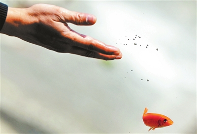

内心反复了好几次，觉得应该写篇有关放生感应的文章了，不为别的，一来为了坚定在放与不放中摇摆不定师兄们的信心，证实佛言不虚。二来借此感恩诸佛菩萨N年来对弟子无微不至的关怀，有很多话要说，却又不知从何说起，只因为佛菩萨帮了我太多太多~~~
早先，末学经常利用空余时间在网上各放生论坛拜读师兄们的放生心得及感应文章，心里很是羡慕，发自内心的赞叹师兄们的善举，看到师兄们各种不可思议的感应，从内心就产生一股冲动——我也要放生！
某年的一次烟台南山之行，给我结下了深深地佛缘，我的命运也因此行而改变。小时候虽也去过寺庙，但年少慧浅，神佛不分，只是怀有一种敬畏之心，见了就拜，说到修行，更是连边都沾不上。烟台的龙口南山禅寺，也是偶然的机缘随母亲旅游去的（现在想来偶然当中存在着必然，因缘和合，瓜熟蒂落，因为母亲在年轻的时候遇到一位在公-安局工作的师兄，当时那位师兄对母亲就说了一句话：你四十多岁的时候会进佛门。听母亲说当时她一脸诧异，佛门连听都没听说过，不知所云）进了大雄宝殿，依旧和儿时一样见谁拜谁，不过这次可有点不一样了，我一跨进门槛，里面就有一位出家师父瞪着我，那眼神让我很拘束，拜佛的人很多，唯独在我拜的时候师傅敲了三下大铜钵，那悦耳的声音真是太美妙太透彻人心了，顿时法喜充满，径直向师傅走去，当时也不知道给师父顶礼，就是看到师傅身旁的柜子里有几本书，想请来看看，没想到师父竟把柜子里的书都给了我，并让我等一会儿，说回寮房再拿些给我，就这样我大包小提的走出了大殿，与佛结缘从这儿开始。
从烟台回来之后，对佛法倍感兴趣，整日在电脑上查找资料，一次点到了海涛法师讲放生的功德利益，听得我心血来潮，还没听完就什么不顾的骑上自行车去市场买鱼，记得当时买了三条大鲤鱼，炎炎夏日，我费了九牛二虎之力来到了离家五六公里远的湖里放生，由于有一段是上坡路，只能推着走，浪费了不少时间，鱼儿在水里漂了一会儿，等缓过劲来就开始不停地跳出水面，好生欢喜。看到鲤鱼菩萨们欢快的跳跃，我也长舒了一口气。人有善愿，天必佑之，初次放生佛菩萨是不会让你感到遗憾的。看着浑身湿透的衣服，擦了擦额头上的汗水，心里美极了，我也放生了，这是我生平第一次放生，从此放生便一发不可收拾，接二连三的感应也一 一到来。
刚步入大学时，我心里想了三个心愿，一是能当班长，二是进学生会，三是争取在校成为党员。这目标我自己都觉得不沾边，能实现吗？自己都在怀疑，好在这只是想想罢了，一切随缘。没想到在接下来的几年中我的心愿一 一实现，一切是那么的自然，我根本都没有刻意的去争取。起心动念，如来悉知悉见，真的佛氏门中，有求必应。
接下来在陆续进入几家单位实习的时候和单位领导又结下了善缘，我组织大伙去放生，直到现在以前单位的老大还电话联系我一起去放生，由衷的随喜赞叹老领导的发心，人家就是有福报，现在又不断放生，真是福上加福。
到了谈婚论嫁的年龄，上大学时，对于好多出双入对的情侣很是羡慕，但心里很明白过早的抓住一棵树而失去整片森林得不偿失啊，现在想想自己当时是多么的明智。（暗自窃喜，该省的都省了，留着钱去放生）后来在网上看到好多师兄通过写求妻疏，再加上放生行善助缘得到如意的伴侣的时候，我也心动了，就照着写了一份贴在床头上，内容大致是求大慈大悲的观世音菩萨帮我找个对象，还列了好几个条件来难为菩萨，一是要长的漂亮，身材苗条，身高一米七以上。二是要孝顺父母。三是支持我学佛。四是对我事业有帮助。就这样这张求妻疏就贴在我的床头上，之后我还是有空就去放生，遇到有缘的就给大家讲些佛法知识，大约半年后，我生命中的另一半出现了，第一次见到我老婆时差点把我迷住了，嘿嘿。长得漂亮，穿的光鲜亮丽，很有气质，身材苗条，身高一米七一的个子，在大学时就是兼职车模。当时心脏那个跳啊，差点蹦出来，刚开始我还有些犹豫，自己长得其貌不扬，人家能看上咱吗？后来不知哪来的勇气，下决心展开攻势，用尽了自己的十八般武艺，一切都有如神助，不到一个月关系就确定下来（期间发生了不可思议的事，在我家佛堂念大悲咒时她竟看到了观音菩萨的白衣真身），紧接着我不断的给她讲佛法，她很有善根，闻即信受，很快就把肉给断了，跟着我吃素，和我一块放生，也不再化妆，不再穿名牌衣服。我平时犯了错误很快给我指正，名符其实的贤内助。大慈大悲的观世音菩萨，弟子此生一定学您的无缘大慈，同体大悲，广做善事，利益众生。不辜负您的慈悲厚爱。
结婚不到半年，老婆怀孕了，依旧坚持吃素，决心生个素食宝宝，与此同时我们放生也更精进了，媳妇儿挺着肚子，冒着严寒，有时候放生需要把结冰的湖面凿开，很费功夫，由于我们经常放生，认识了好多好多师兄后来都加入到我的放生队伍中来，其中不乏也有有神通的师兄，对于他们给我说的话我总是一笑应之，所谓妙用难测为神，自在无碍为通，不贪求也不执著它。有一位刘姐，为人忠厚，善良朴实，平时乐于助人，有神通，能够看到不同维次的众生，一次她问我：你想知道你媳妇儿肚子里是男孩还是女孩吗？我笑了笑说生男生女都一样，然而嘴上这么说，心里却不这样想，我还是希望生个儿子，以后放生时还能帮我出点力呢，哈哈，想的够远的吧。刘姐告诉我她看到是个女孩，大大的眼睛，圆圆的脸蛋，非常漂亮。此后老婆在梦中也印证了刘姐说的话，看的非常清楚，和刘姐描述的一模一样。后来每次放生之后，我都偷偷的回向，希望老婆肚子里是个男孩，并且安乐易养，聪明乖巧，善根福德深厚，如此回向了N次。到临产时更是不可思议，人家生产的孕妇都是躺着被推进产房的，而且由于疼痛难忍表情都很痛苦，而我老婆是自己一路小跑，自己就进了产房，我也没闲着，给师兄们打电话帮忙念观音菩萨圣号回向给老婆孩子，又给师父打电话代求佛菩萨护持生产顺利。我和母亲还有她的朋友则在产房门口合掌高声念“南无大慈大悲救苦救难广大灵感观世音菩萨”引来了不少人的观看，呵呵 ，一历耳根，永为道种。顺便又度了不少人，不到半小时的功夫，助产护士走出来说：男孩，六斤。当时心中狂喜。接着对我说：好好犒劳一下你老婆，人家可是功臣。今天十个产妇八个剖腹产，可给你省钱了。我忙回答：好的好的（心中又在狂喜）。随后七天中，我几乎天天去放生，连鱼带筐八十多斤因为有了儿子也格外有力气，自己一股劲就放完。每天一部地藏经读了七部。把儿子收到的份子钱全部拿来修庙，放生。如今儿子一岁半了，从娘胎就没沾过荤腥，到现在和我们一起吃素，非常健康。从没进过医院，十一个月时同时学会了走路和说话，很聪明，长得又帅气，长大后肯定不愁找媳妇儿，哈哈。
放生助我又结宿世善缘，也是通过放生，结缘了W师兄，W师兄性情豪爽，不拘小节，虽然他差点使我在修行的路上偏离航向，不过帮了我很多忙，在此还是很感激他的，离开单位不久，他就给我指了某地，说我与某地有缘，你去那儿吧，他给我指的地方我连听都没听说过，究竟会遇到哪些人？碰到哪些事？一切都是未知数。出于信任，我还是去了。我在某地仍是教书育人，一切是那么的正常，在教孩子们书本知识的同时，利用空余时间教孩子们传统文化，教孩子们如何孝顺老人，尊敬长辈，如何多做好人好事，保护小动物。孩子们都很有善根，我始终坚信，好孩子是教出来的，为什么孩子会学坏，是因为没人教他们。随着时间的迁移，善缘一个接一个的出现，他们都是孩子们的家长，现在周末都随我一起放生。有一天，一位对我来说是重量级的人物出现了，她也是孩子的家长，一见到她，就感觉和她缘分不浅，很有亲切感，但年龄却和我相差无几，她极具慧根，对于我讲的佛法知识，人家闻即信受，我让她最好吃素，人家当下放下荤腥吃起长素，让她念佛诵经，接着就念佛诵经，每日工作之余，不曾间断。让她印经放生，立即就印经放生，绝不含糊，好一个善根福德因缘具足之相。有一座古寺需要重建缺乏资金，我把这事告诉了她，没过多久，给我拿来10万现金，告诉我：自由支配，可以放生，可以修庙，你自己看着办吧。我也纳闷，人家为什么这么信任咱，只是因为出于对一名教师的信任吗？偶然的一次机会遇到了久别重逢的一位老菩萨，我把这事告诉了他，老菩萨听后郑重其事的告诉我：你知道吗，她是你三百年前的母亲，你是儿子，我一听有点懵了，看到我一脸诧异，老菩萨说信不信由你，我忙回答，我信我信，心里不由的感叹往昔母子相待，今夕只师兄相称，生死轮回，因果循环不虚。她从不计较放生中的得失，短短的几个月，她随我们放生加上布施达二十多万，就在写这篇文章时，师兄又给我送来了两万元放生款（佛菩萨您太慈悲了，写篇文章还付我稿费，呵呵）。我发自肺腑的随喜人家的功德，现在她已成为我们放生队伍中的绝对骨干，对于师兄的善举，我只能在内心深处不断地随喜 随喜 赞叹 赞叹~~~
从开始自己几十元几十元的放，到之后几百元几百元的放，又随之几千几千的放，到现在组织了放生会上万上万的放，深感诸佛菩萨的慈悲加持，放生的感应实在太多，太过神奇的在此就不讲了，免得说出后，有人狐疑不信，再造口业。再举一例，有一次我放了很多大黑鲶鱼，个头超大，放生这么多年很少见过这么大的，感觉像成精了一样，放的时候它们竟也像鲤鱼一样在水面跳跃，我在湖边站了半小时它们就跟着跳了半小时，见到此景，心中欢喜心油然而生。到了晚上，我做了一个梦，梦见一桌酒席，桌上鸡鸭等肉一应俱全，桌边围坐了一圈穿黑衣服的年轻小伙子争相为我敬酒，我忙说道：不喝 不喝，你们的好意我心领了（当时心里很明白他们就是被我放的大黑鲶鱼），你们怎敢再喝酒吃肉，你们过去生中造了诸多不善业所以沦为旁生，还不悔改。他们一一相视都沉默不语，我大声念起阿弥陀佛，从梦中回到现实，依旧嘴里念着佛号，梦中的情景历历在目，好不感叹生死轮回，因果不虚！
写了不少了，要说发生在我身边的感应，一时半会儿也说不完，只举了几例希望能坚定师兄们放生的信心，对于感应，不要执着，一切随缘，所谓众生有感，佛就有应，只要断恶修善，老实念佛，加上吃素放生助缘，相信您的命运定会扭转乾坤的！